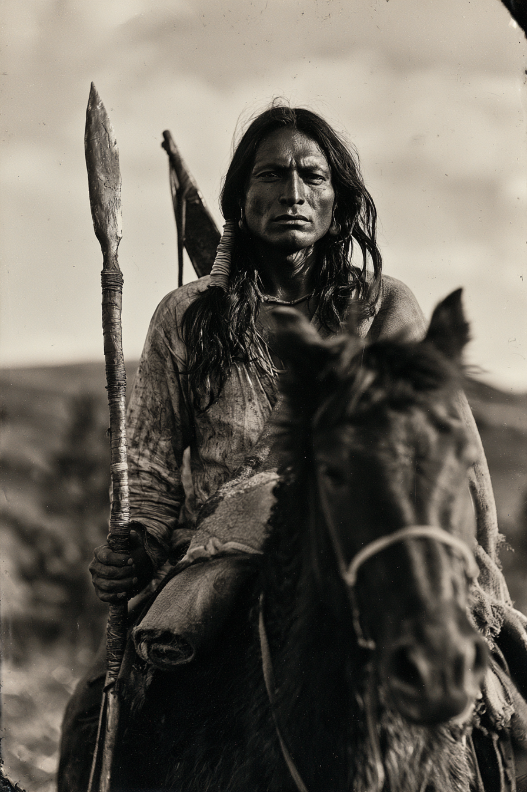

Archetyp: WARRIOR (Krieger)
Ein Vertragsvollstrecker mit einer Klingenkeule, der die Beweise sammelt, die den Deal seiner eigenen Familie in Brand setzen werden.
| Agility | d6 | 1 |
| Smarts | d4 | 0 |
| Spirit | d6 | 1 |
| Strength | d8 | 2 |
| Vigor | d6 | 1 |
| Skill | Attr. | Die | Pts. |
|---|---|---|---|
| Fighting | Agi | d8 | 4 |
| Athletics | Agi | d6 | 1 |
| Riding | Agi | d6 | 2 |
| Notice | Sma | d6 | 2 |
| Shooting | Agi | d4 | 1 |
| Survival | Sma | d4 | 1 |
| Intimidation | Spi | d4 | 1 |
| Stealth | Agi | d4 | core |
Hintergrund. Geboren 1857 am Powder River, mit neunzehn in die Tȟokála-Kriegergesellschaft (Kit Fox) aufgenommen. 1884 halten die Sioux-Nationen ihre Grenzen noch — Maschinen verrotten darin, und die US-Armee hat für die Plains keinen Magen mehr —, also ist die Arbeit von Walking Thunder nicht glorreich: er patrouilliert die Geisterstein-Konzession in den Black Hills, jene, die der Rat seines Onkels aushandelte, damit Deadwood weitergraben darf. Er hat gesehen, wie das Wild um die Gruben dünn wurde, wie ein Bach die Farbe eines alten Pennys annahm und wie die Kinder der Bergleute auf eine Art krank wurden, für die der wašíču-Arzt keinen Namen hat. Er reitet mit Fremden hinaus, weil die Konzession die Probleme der Fremden zu Lakota-Problemen gemacht hat und weil eine Posse in Deadwood Fragen stellen kann, wo ein akíčhita in Farbe nur beschossen würde. Er will die Konzession für nichtig erklärt sehen. Er ist weder sentimental gegenüber den Alten Bräuchen noch naiv gegenüber den neuen — er will schlicht das Argument gewinnen, und er ist zu der Auffassung gelangt, dass er dafür Beweise braucht statt eines Kampfes.
Build. Geschicklichkeit W6, Verstand W4, Geist W6, Stärke W8, Konstitution W6 · Parade 6 (5 mit der Klingenkeule), Robustheit 5 Kämpfen W8, Athletik W6, Reiten W6, Bemerken W6, Schießen W4, Überleben W4, Einschüchtern W4, Heimlichkeit W4. Spricht Lakota, brauchbares Englisch, Plains-Zeichensprache. Talente: Don’t Get ‘im Riled! (Mach ihn nicht wütend!), Guts (Mumm), Trademark Weapon (Lieblingswaffe — die Klingenkeule) Handicaps: Obligation (Verpflichtung, schwer) — Major: an die Kit-Fox-Gesellschaft und den Rat gebunden; sie können ihn mitten in der Geschichte zurückrufen · Oath of the Old Ways (Eid auf die Alten Bräuche, leicht) — Minor: keine moderne Technik, auf keinen Fall Geisterstein; Gratis-Neuwurf auf Geist-Proben, solange er ihn hält · Outsider (Außenseiter, leicht) — Minor Ausrüstung: Klingenkeule (St+W8, DB 2, Parade −1, zweihändig, Mindeststärke W8), Bogen, Tomahawk, Messer, Büffelpony mit Polster und Rohhautzaum, Satteltaschen, Schlafrolle, Feldflasche, Proviant. Sein Vater trug die Keule am Greasy Grass; die Schäftung wird jedes Frühjahr neu gewickelt.
Aufhänger. Vor zwei Sommern überfiel er in der Dämmerung einen Vermessungstrupp und stieß einem Mann eine Lanze durch die Brust. Der Mann stand wieder auf, ging an ihm vorbei und ging weiter nach Norden. Walking Thunder rannte — das einzige Mal in seinem Leben — und hat es nie einer lebenden Seele erzählt, nicht seiner Gesellschaft, nicht seinem Onkel. Er legte den Eid auf die Alten Bräuche in der Woche darauf ab, und alle hielten es für Frömmigkeit. Er glaubt, dass das Ding immer noch nach Norden geht und irgendwann zurückkommen wird. (Schlimmster Albtraum: die Vermessungspflöcke, einer nach dem anderen, bis zum Horizont, in völliger Stille.)
Warum es Spaß macht. Du machst auf Novize 2W8 mit DB 2 und wirst stärker, je mehr Wunden du kassierst — je mehr der Tisch in Panik gerät, desto besser wird dein Zug. Und du bist der Diplomat der Posse, also ist jeder Kampf, den du anfängst, zugleich ein Vertragsproblem.
Regelgrundlage: Regelnotizen · Archetyp-Notizen